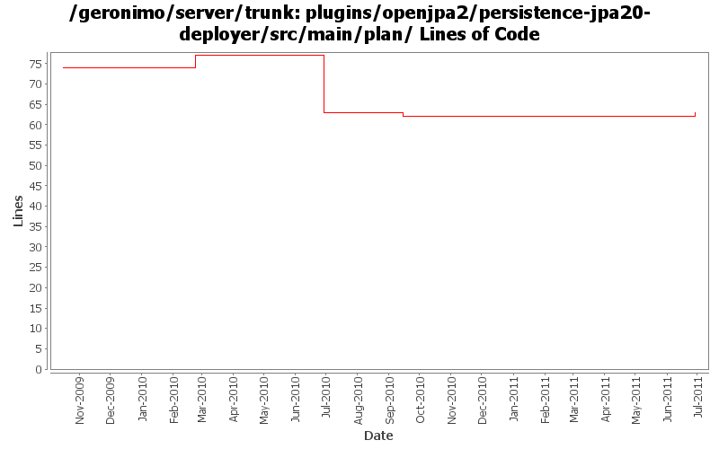

[root]/plugins/openjpa2/persistence-jpa20-deployer/src/main/plan

| Author | Changes | Lines of Code | Lines per Change |
|---|---|---|---|
| Totals | 6 (100.0%) | 5 (100.0%) | 0.8 |
| gawor | 2 (33.3%) | 3 (60.0%) | 1.5 |
| hanhongfang | 1 (16.7%) | 1 (20.0%) | 1.0 |
| djencks | 1 (16.7%) | 1 (20.0%) | 1.0 |
| dwoods | 2 (33.3%) | 0 (0.0%) | 0.0 |
add ConvertPositionalParametersToNamed=true to enable openjpa support for non-sequential positional parameters (OPENJPA-1999)
1 lines of code changed in 1 file:
GERONIMO-5606: An attempt to generate a proper persistenceUnitRoot for a PU. The PU relies on BundleResourceClassLoader which returns 'jar' urls for resources embedded in jars.
0 lines of code changed in 1 file:
Only look in module and parents for persistence units. Only look in module for persistence units for refs. Combine persistence unit and context ref builders.
1 lines of code changed in 1 file:
add versions
3 lines of code changed in 1 file:
missed a configs.openjpa to openjpa2 update
0 lines of code changed in 2 files: